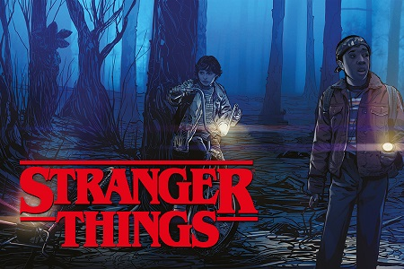
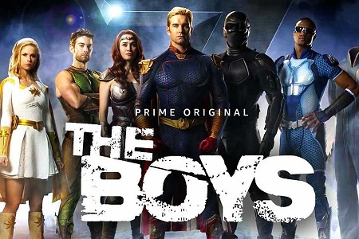

Séries télévisées à ne pas manquer
Stranger sthings by Netflix
Stranger Things est une série télévisée de science-fiction horrifique mâtinée de fantasy (présence d'une dimension parallèle...) américaine, créée par les frères Duffer et diffusée depuis le 15 juillet 2016 sur Netflix. Elle compte à ce jour trois saisons et vingt-cinq épisodes.
L'ambiance de la série est fortement inspirée par les films fantastiques et de science-fiction des années 1980, piochant ses influences dans les œuvres de H. P. Lovecraft, Steven Spielberg, John Carpenter, John Hughes ou Stephen King.

Synopsis
A Hawkins, en 1983 dans l'Indiana. Lorsque Will Byers disparaît de son domicile, ses amis se lancent dans une recherche semée d’embûches pour le retrouver. Dans leur quête de réponses, les garçons rencontrent une étrange jeune fille en fuite. Les garçons se lient d'amitié avec la demoiselle tatouée du chiffre "11" sur son poignet et au crâne rasé et découvrent petit à petit les détails sur son inquiétante situation. Elle est peut-être la clé de tous les mystères qui se cachent dans cette petite ville en apparence tranquille…
The boys by Amazon Prime
The Boys est une série télévisée américaine de super-héros basée sur la bande dessinée du même nom de Garth Ennis et Darick Robertson. La série a été développée par Eric Kripke. Elle est diffusée dans le monde entier depuis le 26 juillet 2019 sur Prime Video.

Synopsis
Dans un monde fictif où les super-héros se sont laissés corrompre par la célébrité et la gloire et ont peu à peu révélé la part sombre de leur personnalité, une équipe de justiciers qui se fait appeler "The Boys" décide de passer à l'action et d'abattre ces super-héros autrefois appréciés de tous.